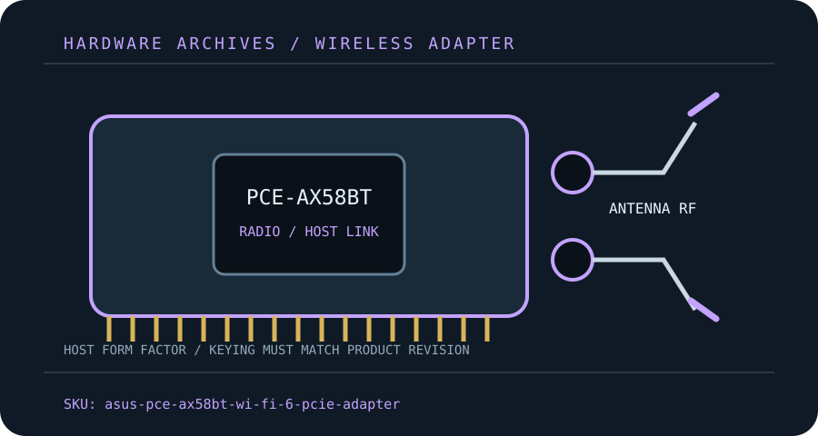

[ MODEL-SPECIFIC M.2 / PCIE WI-FI HARDWARE ]
ASUS PCE-AX58BT AX3000 Wi-Fi 6 PCIe Adapter
Dual-band desktop Wi-Fi 6 kit using a two-stream radio with separate Bluetooth USB-header wiring.
IDENTIFICATION: Match the full model, hardware revision, regulatory region and radio-module label before ordering replacements or selecting drivers. Values are manufacturer specifications, not a guaranteed measurement.

Dedicated wireless specifications
| Cataloged product | ASUS PCE-AX58BT AX3000 Wi-Fi 6 PCIe Adapter |
|---|---|
| Chipset / radio module | Intel Wi-Fi 6 AX200 M.2 radio module in the documented adapter configuration; confirm actual module/revision before service. |
| Wi-Fi generation / standards | Wi-Fi 6 / IEEE 802.11ax, with 802.11a/b/g/n/ac backward compatibility. |
| Radio bands, channels & width | 2.4 GHz and 5 GHz; dual-band AX3000 class, with 160 MHz 5 GHz support when AP, driver and regulatory channel plan permit. |
| Spatial streams / nominal link rates | 2×2 MU-MIMO; advertised nominal peak rates are up to 2,402 Mb/s at 5 GHz and 574 Mb/s at 2.4 GHz. |
| Host interface / form factor / keying | PCI Express x1 host card with M.2 Key E radio module; Bluetooth requires the included cable to an internal USB 2.0 header. |
| Antenna connectors | Two external detachable antennas on two RP-SMA jacks, supplied with a remote antenna base; use the included connectors. |
| Bluetooth | Bluetooth 5.0; USB header connection and separate Bluetooth driver required. |
| Operating-system / driver compatibility | ASUS support/downloads target supported Windows 10/11 editions; verify currently offered driver and system architecture for the hardware revision. |
| Regulatory and host caveats | This is Wi-Fi 6 dual-band, not Wi-Fi 6E: no 6 GHz radio support. 160 MHz requires AP support and permitted channels. An M.2 radio replacement is not guaranteed merely because the module fits—firmware, antenna leads and Bluetooth cabling must match. |
Model-specific installation notes
Install only with the host powered down and follow the manufacturer’s manual for slot, cable, antenna and ESD precautions. Fit and electrical compatibility are separate questions: the host must support the stated interface, firmware and driver for this exact SKU.
Nominal PHY rates vary with channel width, modulation, signal quality, regulatory domain, AP capabilities and concurrent client traffic. They are not measured Internet or application throughput. Confirm local 6 GHz/5 GHz channel permissions before deployment.
Manufacturer sources
- ASUS PCE-AX58BT product informationASUS product page for model feature identification.
- ASUS PCE-AX58BT manuals and downloadsOfficial ASUS manual/download page; confirm region and installed revision.
Source pages can be regional or revision-specific. Use the exact manufacturer page and package matching the label on the adapter and host.